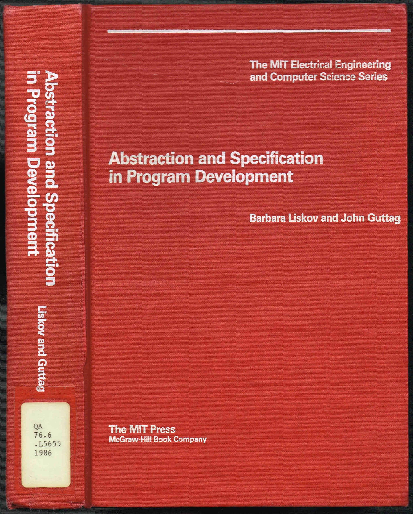
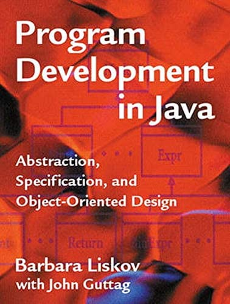
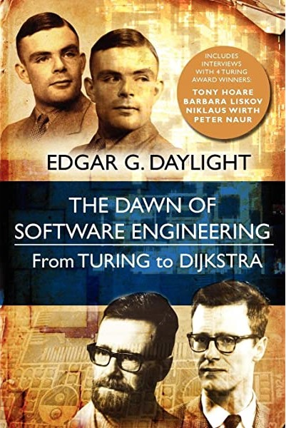

Barbara Liskov

Barbara Jane Liskov es una prominente cientifica dela computación Estado Unidense nacida en Los Angeles, California en Estados Unidos el 7 de Noviembre de 1939.
Barabara estudio una licenciatura en matemáticas en la Universiadad de California, la cual que finalizo en el año 1961, trabajó como programadora de computadoras en Massachusets, primero con el Mitr Corporation y luego en la Universidad de Harvard. En 1963 regresá a california en donde se convirtio en asistente de John McCarthy y trabajo en sus projectos de inteligencia artificial en la Universidad de Standford. Liskov obtuvo una maestría 1965 y un doctorado 1968 de Stanford, convirtiéndose en la primera mujer en obtener un doctorado en informática en los Estados Unidos. Después de graduarse de Stanford, Liskov regresó a Mitre Corporation 1968-72 antes de unirse a la facultad del Instituto de Tecnología de Massachusetts (MIT), donde se convirtió en profesora NEC de ciencia e ingeniería de software 1986-97, profesora Ford of Engineering 1997-, y profesor del Instituto MIT 2008-.
Barbara Liskov es la autora de tres libros y más de cien artículos técnicos.



Es miembro de la Academia Nacional de Ingeniería, de la Academia Americana de las Artes y las Ciencias y de la Association for Computing Machinery (ACM). En 2002, fue reconocida como uno de los mejores miembros de mujeres de la facultad en el MIT, y entre los 50 primeros miembros de la facultad de las ciencias en los Estados Unidos.
En 2004, Barbara Liskov ganó la Medalla John von Neumann "contribuciones fundamentales a los lenguajes de programación, metodología de programación, y sistemas distribuidos". El 19 de noviembre de 2005, Barbara Liskov y Donald E. Knuth fueron premiados con doctorados honorarios de ETH. Liskov y Knuth también se destacaron en el Coloquio Distinguido ETH Zurich.
Liskov recibió el 2008 Premio Turing de la ACM, en marzo de 2009, por su trabajo en el diseño de lenguajes de programación y metodología de software que llevaron al desarrollo de la programación orientada a objetos. En concreto, Liskov desarrolló dos lenguajes de programación, CLU en los años 1970 y Argus en la década de 1980. La ACM citó sus contribuciones a los fundamentos teóricos y prácticos del "lenguaje de programación y el diseño del sistema, especialmente relacionados con la abstracción de datos , tolerancia a fallos y distribuido computación ".
En 2018 se la nombró doctora honoris causa por la UPM.